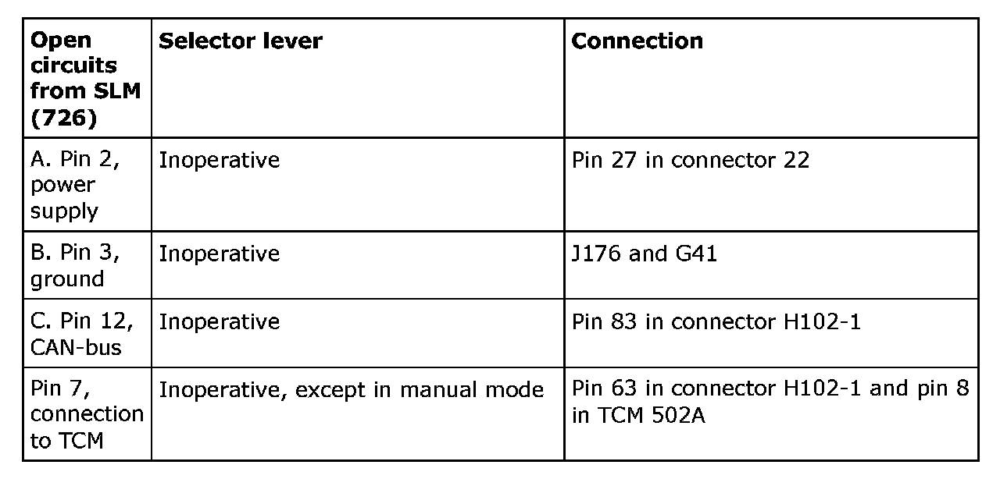

The CHECK GEARBOX Lamp Is Constantly Lit and Diagnostic Trouble Code P0826 06 Is Indicated
The CHECK GEARBOX lamp is constantly lit and diagnostic trouble code P0826 06 is indicatedFault symptom
The CHECK GEARBOX lamp is constantly lit and the selector lever is partially blocked or inoperative. P0826 06 is indicated.
Note
Carry out the following fault diagnosis before normal fault diagnosis for the diagnostic trouble code is performed.
Conditions
When the above symptom occurs and diagnostic trouble code P08265 06 is indicated, it is usually a contact fault in a cable. This must be checked in accordance with the following procedure so that the TCM is not replaced unnecessarily.
Pin 8 in the TCM connector 502A is directly connected with the control module to the selector lever control module (SLM). When the selector lever is in position M, TCM activates manual gearshifting. SLM then supplies TCM with the following voltages via its own cable:
- Hold Gear, Voltage between 0.5V-1.4V
- Shift Gear -UP, (+) Voltage between 1.4V-1.8V
- Shift Gear -Down, (-) Voltage between 2.7V-3.5V
When the voltage in the cable is less than 0.3V, diagnostic trouble code P0826 06 is generated and saved. The CHECK GEARBOX lamp is lit.
Action
Note
Erase all diagnostic trouble codes before fault diagnosis is begun
The table describes different faults which can cause diagnostic trouble code P0826 06 to be generated. If it is an open circuit to pin 7 then diagnostic trouble code P1802 can also be indicated. The SID message is: Gearbox Failure

TCM generates diagnostic trouble codes if the open circuits to one of the pins in SLM is temporary or permanent. If the open circuit is permanent then the driver will become aware that the selector lever is completely or partially inoperative, and then the selector lever must be examined. If the open circuit is temporary then the diagnostic trouble code may be generated due to an open circuit in accordance with the table under "Open circuits from SLM" or under "Connection".
If the fault remains, perform the normal fault diagnosis.